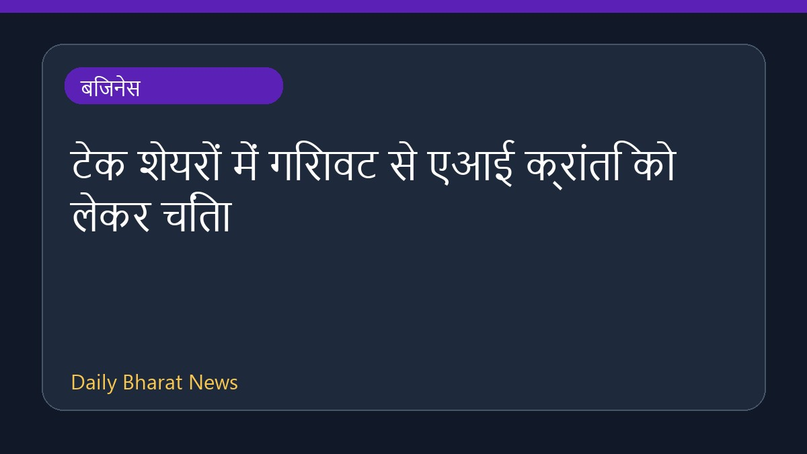

टेक शेयरों में गिरावट से एआई क्रांति को लेकर चिंता

चिप निर्माताओं के शेयरों के मूल्य में भारी गिरावट आई है, जिससे निवेशकों के मन में यह चिंता पैदा हो गई है कि आर्टिफिशियल इंटेलिजेंस से जुड़ी कंपनियों को लेकर उत्साह अब कम हो रहा है। इस संबंध में अधिक विवरण अभी सीमित हैं, लेकिन इस गिरावट ने बाजार में हलचल पैदा कर दी है। निवेशकों की नजरें अब इस बात पर टिकी हैं कि आने वाले समय में टेक शेयरों का यह रुख बाजार और एआई उद्योग को कैसे प्रभावित करेगा।
मूल स्रोत: BBC Business
Some tech shares are plunging - what does that mean for the AI revolution? ↗
Some tech shares are plunging - what does that mean for the AI revolution? ↗